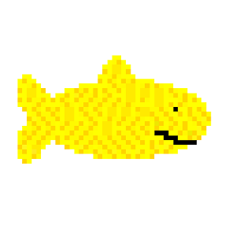

Hi! I'm Stephen, an 18 year old African-American young man who stands just over six feet tall. I'm funny, but for the record, I can't sing, dance, or even play basketball. Instead, I'm skilled in developing solutions to challenging problems and am studying at the Carnegie Mellon School of Computer Science. Check me out below.
Experience
San Diego Supercomputer Center
I worked as a research intern to create a benchmark for AMBER Molecular Dynamics Quantum Mechanical and Molecular Mechanical simulations. I also extended AMBER functionality in FORTRAN to use external QChem calculations.

Measurabl - Sustainability Simplified
I worked as a software development intern to create internal tools to automate tedious processes. I also developed weather normalization regression models implemented in the Measurabl web app.

Projects
CMU Beep Boop
Grocery Guru
This application was designed and developed as a result of a 24 hour CodeDay competition. It was an attempt at addressing some of the basic budget and dietary issues facing many Americans today: waste, costs, and unhealthy food choice.
Aquarium
This was my first programming project. Although simple, I created an interactive wallpaper with five tropical fish that encourages users to create a unique aquarium environment. To this day, I still use this app as the wallpaper on my phone.

Binary Counter
Using a Raspberry PI microcontroller device along with 7-segment displays and a battery source, I created a binary counting system that allowed users to visually grasp and understand the relationship between the binary and decimal systems.
Additional Projects
These projects represent some of my programs I developed during my free time and that I ported to run on the web. I also have a small collection of web experiments as a result of one day challenges I commit myself to.
- 🌊 reefbreak - customizable online poll
- Stephen's Jokes - a joke database
- Dragon Clock - dragon curve clock
- Experiments - daily challenges
- Archive - old embarrassing projects
- CaliforniaClarks.com - family website